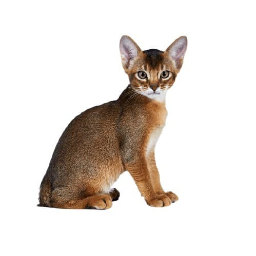
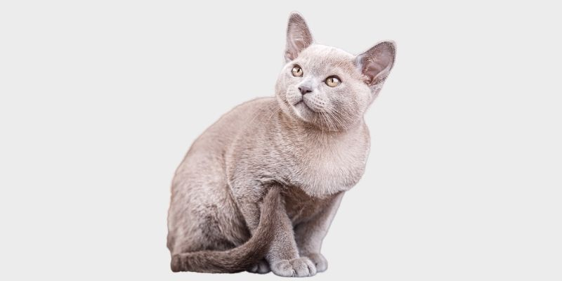
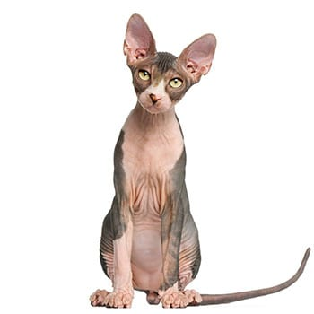
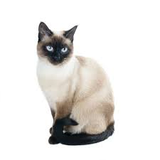
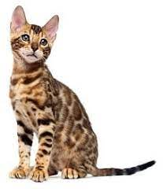

סוגי חתולים ביתיים נפוצים
חתול אביסיני

חתול אביסיני הוא גזע של חתול בית, גודלו בינוני והוא מוכר כאחד מהגזעים העתיקים בעולם ! התכונות והמראה החיצוני של האביסיני הם שילוב יחיד במינו של יופי ומתיקות לצד אצילות ואלגנטיות ולכן הגזע האביסיני מבוקש מאוד בקרב אנשים ומשפחות . משקל האביסני נע בין 3.5 קילוגרם ל5.5 קילוגרם. ואורך חייו נע בין 9 שנים ועד 15 שנים בטווח העליון.
חתול בורמזי

הוא בעל עיניים גדולות ומלאות ברק , גוף מוצק וחסון, קול עמוק ומראה מתוק החתול הבורמזי הוא אחד מחתולי הבית המעניינים והמקסימים ביותר. כשמדברים על הבורמזיים אי אפשר שלא להתחיל מההיסטוריה שלהם. לפי המיתוס אבותיהם ואמותיהם של החתולים הללו ,שירתו במקדשים העתיקים של בורמה העתיקה (מיאנמר של ימנו) שם הנזירים הבודהיסטים ייחסו לחתולים אלו תכונות אלוהיות והאמינו שעליהם להיות השומרים המקודשים של המקדשים בהם הם סגדו. הבורמזי הוא חתול קל משקל, משקלו נע בין 4-6 קילוגרם לערך.
חתול בריטי קצר-שיער

הוא בעל עיניים גדולות ומלאות ברק , גוף מוצק וחסון, קול עמוק ומראה מתוק החתול הבורמזי הוא אחד מחתולי הבית המעניינים והמקסימים ביותר. כשמדברים על הבורמזיים אי אפשר שלא להתחיל מההיסטוריה שלהם. לפי המיתוס אבותיהם ואמותיהם של החתולים הללו ,שירתו במקדשים העתיקים של בורמה העתיקה (מיאנמר של ימנו) שם הנזירים הבודהיסטים ייחסו לחתולים אלו תכונות אלוהיות והאמינו שעליהם להיות השומרים המקודשים של המקדשים בהם הם סגדו. הבורמזי הוא חתול קל משקל, משקלו נע בין 4-6 קילוגרם לערך.
חתול ספינקס

חתולי הספינקס צצו להם אי שם בשנות ה60 בתור מוטציה של חתולים רגילים שגדלו ללא פרווה וקנו להם קהל אוהדים אדוק וחדור התלהבות. עד לעצם היום הזה, הגזע מאוד נפוץ ואהוב, המראה הייחודי שלהם הפך לסמל סטטוס והם מככבים ברשתות החברתיות השונות. הגזע מתאפיין באופי שליו ועדין וחשוב לדעת שיש להם צרכים מעט שונים מחתולים רגילים, הטיפול בהם דורש יותר השקעה מאשר חתלתולים נפוצים.
חתול סיאמי

החתול הסיאמי בעל מראה מתוחכם ואלגנטי עם עיניים כחולות שובות לב, צבע הפרווה הבהיר ויופיו של הגזע קנה לו אוהדים בכל רחבי העולם.
לחתולים סיאמים יש אופי מאוד חזק ועקשן, הם אוהבים להשמיע קולות דיבור ולהביע את דעתם.
הם לא יהססו להבהיר לכם כיצד הם מרגישים באמצעות קולות מגוונים ויצפו ממכם להקשיב במלוא תשומת הלב.
חתול רוסי כחול

חתול רוסי כחול הוא גזע מיוחד של חתול הבית, הייחוד שלו נובע מכך שהוא אחד מהגזעים היחידים בעולם שנוצרו באופן טבעי וללא התערבות ישירה של האדם.
לחתולים אלו כמה תכונות מעולות: הם שקטים ועדינים מאוד הם בדרך כלל ביישנים וזהירים במיוחד כשבני אדם זרים להם מתקרבים אליהם. אל דאגה, כשמדובר בבני אדם שיש להם אמון בהם, הם לא מהססים להראות חיבה ואהבה.
חתול מיין קון

המיין קון הוא גזע הגדול ביותר של חתול הבית, מקורו של המיין קון הוא בארה"ב כאשר עד כמה שידוע הוא תוצר של זיווג טבעי (ללא התערבות אדם) בין גזע של חתול בית קצר שיער לבין גזע חתול בית אורך שיער אחר של ימאי-סוחר שביקר ביבשת אמריקה והחתולים שלו בילו עם החתולים והחתולות המקומיים.
חתול סיבירי
אם אתם מחפשים חתול בגודל בינוני , יפה עד כאב וגם חיית מחמד חביבה ואוהבת , הגעתם למקום הנכון החתול הסיבירי יכול להתאים לכם בול! החתול הסיבירי הוא חתול יער שמגיע מרוסיה המושלגת, שם הוא היה זקוק לפרווה מכובדת ועבה וזה מסביר מדוע הפרווה של החתול הסיבירי מורכבת מ3 שכבות! גופו מוצק ומעוטר בשרירים חזקים בעקבות הצורך ההתפתחותי אבולוציוני לשרוד בסביבה הקשה.
חתול בנגלי

החתול הבנגלי הוא גזע חדש יחסית. הגזע פותח להיות בעל אופי חברותי ויחד עם זאת להציג מראה של חתול פראי. אין להתבלבל עם טיגריס בנגלי שמו של החתול הבנגלי נגזר משם אבותיו חתול נמרי בנגלי